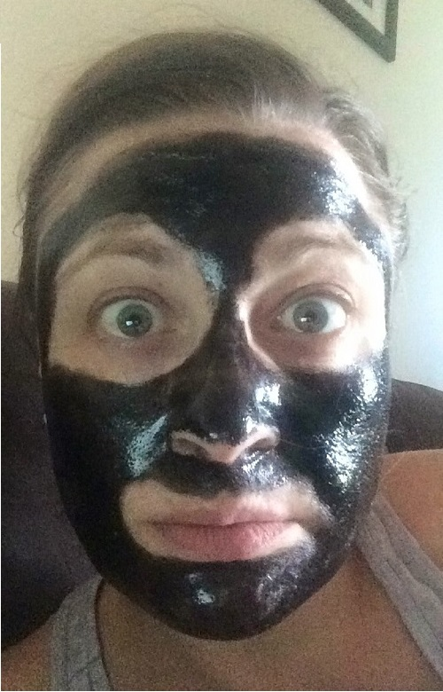

Tuesday was a lazy day with a sleep in. The actuality of the adventure ahead still not quite real. A few last minute decisions before treating myself to a facial thanks to Mary.
My first Uber ride (that I paid for) was a lovely experience. ANNNND CHEAP! Although the lollies and water I’d heard about were nowhere to be found.
Hello Brisbane International Airport!
A reasonably painless transition through check in and customs found us with 2 hrs to kill before our flight.

00:50 departure to Hong Kong with a flight time of 8 hrs and 15 min
2 hr layover in Hong Kong
13 hr flight to London
on check in for the London flight was super disappointed to find that Lang and I were not seated together :-(
Great view from 46E - The back of my head sitting in 45E

3 movies, 2 TV shows, multiple awkward bathroom visits and 13 hrs later we touch down at Heathrow International Airport
Walking out of the plane and across the air bridge at 15:00 local time I was surprised to see the sun already setting. Lazy bastard!
The colours in the London early afternoon sun set reminded me of Roma (QLD)

No surprise we were up early. I had passed out by 19:30 the night before completely oblivious to the sound of the rumbling underground gently vibrating through our hotel room.
Dressed and out the hotel door just after 05:00 local time (approx 15:00 Brisbane time)
First tube ride of the day

Lang and I touristed the shit out of inner London.
I was shocked when we walked out of Westminster Station approx 10 min later and BOOM! There was Big Ben in all his glory!

21,000 steps later and we had visited:
London Eye
Parliament House
Parliament Square
Downing Street
Trafalgar Square
The Strand
Covet Garden Markets
Leicester Square
SOHO
Piccadilly Circus (Spoiler: There are no clowns or a circus. Turns out that “circus” is a term for a circle of something e.g. houses.)
Green Park
Embankment – Walkabout Pub
The Mall
Buckingham Palace
The Royal Collection Shop
Hyde Park Corner Austraila War Memorial and New Zealand War Memorial
Regent Street
Hamley’s Toy Shop
Mac Store (sooooo many Red Shirts!!)
Carnaby Street
M&M Store